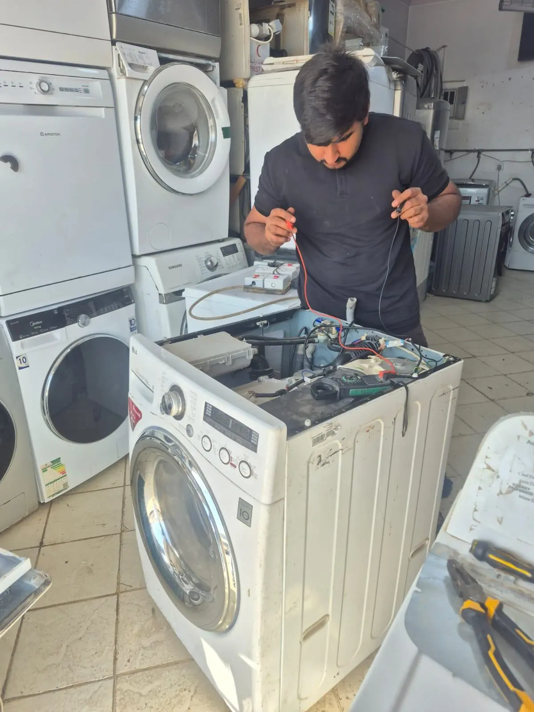

Washing Machine Door Will Not Open: What to Do

A washing machine door that will not open is stressful, especially when your clothes are inside. In most cases the machine is locking the door on purpose, and there is a simple reason. This guide goes through the common causes, the safe steps you can try, and the moment when it is better to stop and call a technician. It is mostly about front-load machines, where the door lock matters most.
Is it normal for the door to stay locked after the cycle?
Yes, for a short time. Front-load machines lock the door during the cycle and release it a little after the cycle ends. On many models this takes about a minute or two. After a hot wash or a long spin it can take longer.
So the first step is the easiest one: wait a few minutes after the machine finishes, then try the door again. Do not pull the handle during this time. If the display still shows the cycle running, or a door symbol is lit, give it longer.
Is there still water in the drum?
This is one of the most common reasons. Many machines will not release the door while water is above a certain level. The machine does this to stop water from pouring onto your floor.
Look through the glass. If you can see water, the problem is really a drain problem, not a door problem. The water must be removed first. The steps are below. Once the water is out, the door often opens normally. If this keeps happening, read about a washing machine that is not draining.
Did the power cut during the cycle?
A power cut in the middle of a wash can leave the door locked and the drum full. When the power comes back, some machines continue the cycle by themselves. Others stay stopped with the door shut.
First, wait and see if the machine restarts. If it does not, switch it off, unplug it, wait a few minutes, and plug it in again. Then run a drain or spin program if your machine has one. If the display shows a code, check your manual, because code meanings differ between models.
Could the child lock be on?
Many machines have a child lock that blocks the buttons, and on some models it also keeps the door shut. It is easy to turn on by accident when you press a button combination while cleaning the panel.
Look for a key or lock symbol on the display. Your manual shows how to turn it off on your model. It is usually done by holding one or two buttons for a few seconds. If you do not have the manual, send us the brand and the model.
Could the door lock or latch be faulty?
Yes. The door lock is a small part that locks and releases the door electrically. With time it can wear out, or the latch hook on the door can bend or break. Signs of a faulty lock are:
- The machine is empty and drained, but the door still will not open after waiting.
- You do not hear the usual small click when the cycle begins or ends.
- The machine will not start the cycle and shows a door or lock error.
- The door will not close properly, or it opens by itself.
- The door looks loose or the hook is visibly bent.
Could a blocked drain pump or filter be the cause?
Yes. Coins, hair, lint, small socks and the like can block the drain filter or the pump. Water then stays in the drum, and the door stays locked. You will often notice other signs first: slow draining, a smell, or clothes that come out very wet.
Cleaning the drain filter, which sits behind a small cover near the bottom front of many front-load machines, can solve it. Doing it also drains the drum, so it is covered in the steps below.
What are the safe steps to open the door?
Do these in order, and stop at any point where you feel unsure.
- Unplug the machine and close the water tap. Safety comes before everything else.
- Wait at least ten minutes. If the wash was hot, wait longer so the water and the glass cool down.
- Try the door gently once more. Do not force it.
- If you see water, place a shallow tray and some towels on the floor in front of the machine.
- Open the small cover at the bottom front, then find the thin drain hose next to the filter. Pull it out, take off its cap, and let the water run into the tray. Lower the hose end into the tray first so it does not splash.
- You may need to empty the tray a few times. Take your time.
- When the water stops, unscrew the drain filter slowly, because a little more water may come out. Remove anything stuck in it, then screw it back firmly.
- Try the door again. Then plug the machine in and run a spin or drain program.
What should you never do?
- Never pull or force the handle. You can break the handle or the latch, and a small problem becomes a bigger one.
- Never use a screwdriver or any tool to pull on the lock.
- Never open the machine body to reach the lock while it is plugged in.
- Never bypass the lock. It exists for your safety.
- Never open the door when it is hot and full of water.
When should you call a technician?
Call if the drum is empty and the door still will not open, if you have no clicking sound from the lock, if the machine shows a door error, or if the water will not come out. Also call if you see damage to the handle or the latch.
A technician can check the lock, the wiring and the drain pump safely, and tell you the fault and the cost before any work. If you are not sure whether it is a drain or a lock problem, our page on a washing machine that is not working may help.
Door still stuck?
If you have waited, drained the water and the door still will not open, do not force it. Send the brand and model by WhatsApp or call +966 59 116 1916 and we will explain the next step.
Frequently Asked Questions
On many machines a few minutes is enough, and a hot wash may need a little longer. If the door is still locked after about ten minutes and there is no water inside, something may be wrong.
It is not safe. Drain the water first through the drain filter hose into a tray. Opening the door with water inside can flood the floor.
Top-load machines also lock their lid during the cycle, but the lock problems are less common. The same checks apply: wait, check for water, and look at the child lock.
Not always. Some models release after power is off for a few minutes, others stay locked until the machine is powered and drained. Unplug it for safety, but do not rely on it to open the door.
Related guides
- Washing Machine Not Draining: Causes and Fixes
- Washing Machine Not Working: What to Check First
- 5 Signs Your Washing Machine Needs Repair
- How to Clean a Washing Machine and Keep It Working Well
- Front-Load vs Top-Load Washing Machine Repair: Differences in Faults
- Automatic Washing Machine Repair in Riyadh